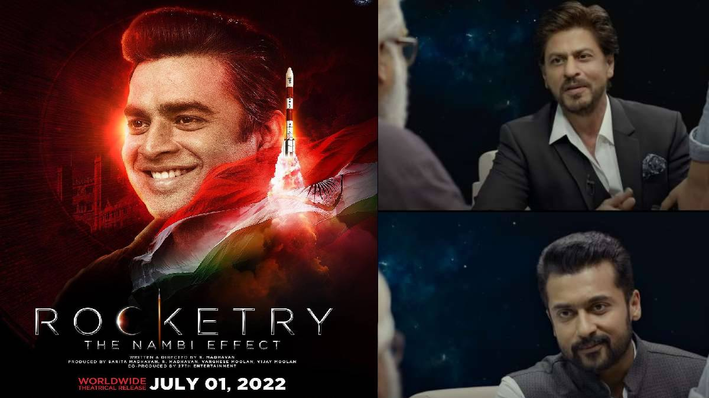
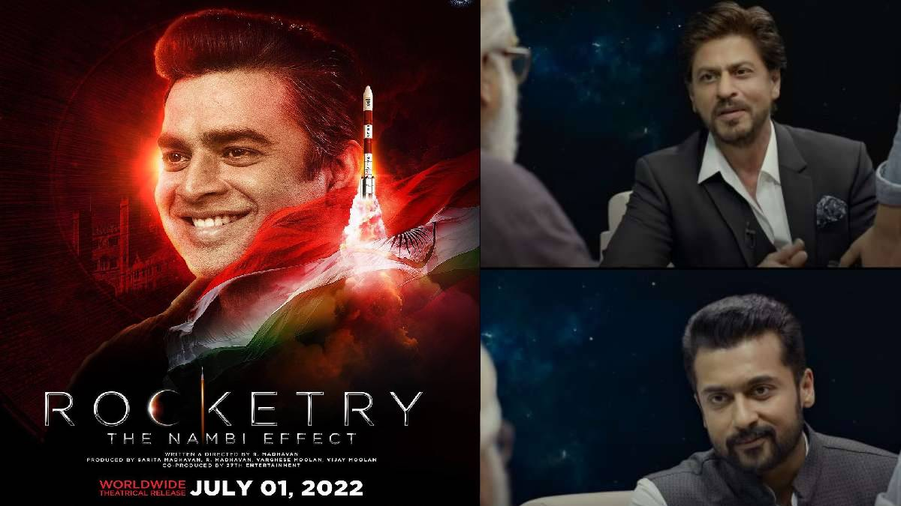

Brahmastra Review: A young, orphaned DJ, Shiva (Ranbir Kapoor), leads a happy life, full of light, around a bunch of orphaned kids. His special connection with fire - it doesn't inflame him - and a host of visuals that appear before him periodically when he shuts his eyes, suck him into a world of superpowers.With comic-book-styled visuals, and Amitabh Bachchan’s baritone, the film sets up its premise and the origin of its universe in an interesting manner. The film scores a great deal on visual effects.The effort and passion invested in creating the universe in this film, replete with minute detailing, are worthy of appreciation. And while doing so, the makers lovingly doff their hats to movies like the Harry Potter franchise. The film shines in divisions like the VFX. The film’s colour palette has been created thoughtfully, and the depiction of the astras created out of the powers of nature and mythological characters is beautiful. The action choreography, especially in the chase sequence before interval, deserves whistles and claps, too.Watching artistes like Nagarjuna and Amitabh Bachchan playing pivotal parts to the T is a delight, but not much of a surprise. They’ve done it a zillion times before. Nagarjuna in his limited screen time is quite effective. And Mr Bachchan appears comfortable in the skin of his character, performing action scenes with ease. Ranbir’s effort to add emotional gravitas to the proceedings is visible. He tries really hard to take the audience beyond the superficial layers of this film with the way he’s played out Shiva. It would have been great if Alia Bhatt and Mouni Roy’s characters were also developed with the same passion as Ranbir’s for them to have that lasting impact. There’s not much attention paid to the secondary characters either, which is unlike anything director-writer Ayan Mukerji has done so far.Even though Brahmastra: Part One: Shiva had the potential and the room for it, the film doesn’t score brownie points for the love story of its lead couple which forms the thrust of the narrative here. In fact, it doesn’t seem plausible from the word go which weakens the film at its core in a big way. As a result, the larger story playing out in the film also feels weak and the screenplay suffers, too. The dialogues aren’t able to salvage much either. Towards the latter part, the runtime begins to feel tedious. The narrative could have been balanced better between the two halves of the film.
Also see: One day collection of Brahmastra
For drishyam review,Click here